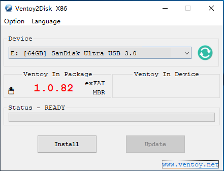
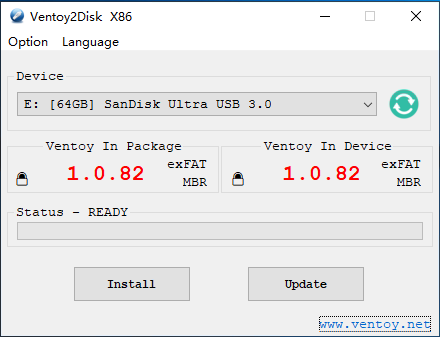
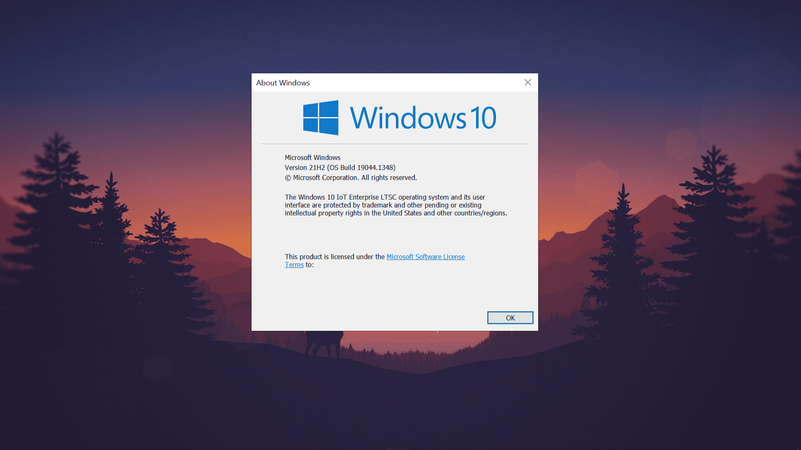
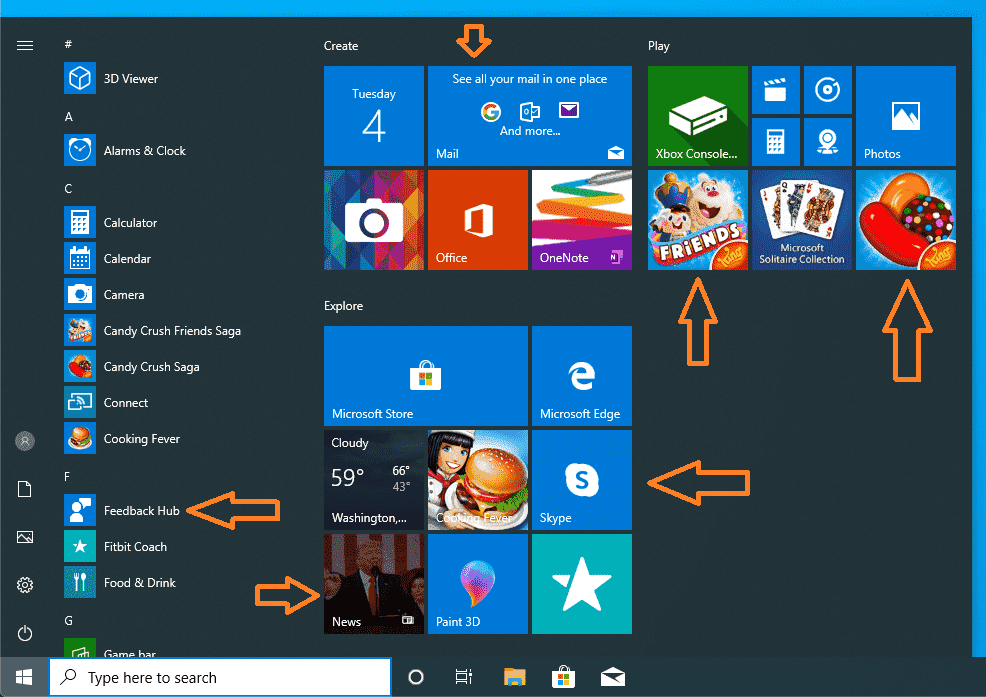
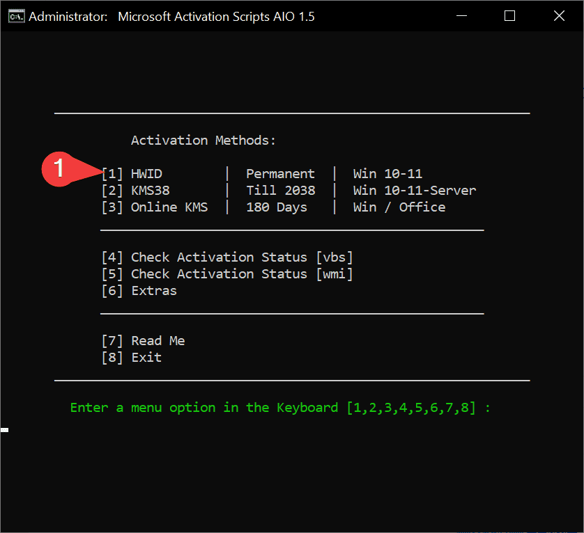
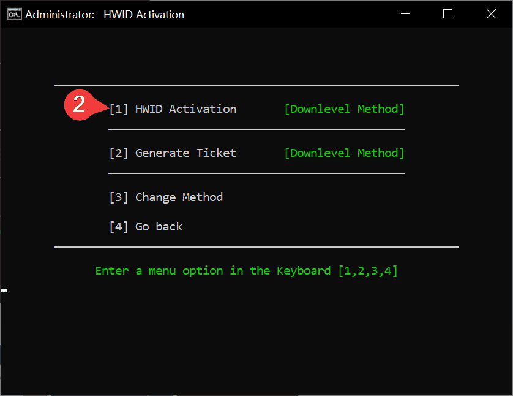

Windows
Tools
- Microsoft Activation Scripts (MAS)
-
Um ativador do Windows e do Office usando métodos de ativação HWID / KMS38 / KMS online, com foco em código-fonte aberto e menos detecções de antivírus.
-
Office Tool Plus baseado na Office Deployment Tool (ODT), você pode implantar o Office com muita facilidade.
-
Ventoy é uma ferramenta de código aberto para criar uma unidade USB inicializável para arquivos ISO/WIM/IMG/VHD(x)/EFI.
Com o ventoy, você não precisa formatar o disco repetidamente, basta copiar os arquivos ISO/WIM/IMG/VHD(x)/EFI para a unidade USB e inicializá-los diretamente.
Mídia de instalação
Instale o Ventoy na unidade USB
Baixe o pacote de instalação, como ventoy-x.x.xx-windows.zip e descompacte-o. Execute Ventoy2Disk.exe , selecione o dispositivo e clique no botão Instalar ou Atualizar.
Atenção
Drive USB será formatado e todos os dados serão perdidos após a instalação.


Copiar arquivos de imagem
Após a conclusão da instalação, a unidade USB será dividida em 2 partições. A 1ª partição foi formatada com o sistema de arquivos exFAT (você também pode reformatá-la manualmente com NTFS/FAT32/UDF/XFS/Ext2/3/4... Ver Notas).
Você só precisa copiar os arquivos ISO para esta partição. Você pode colocar os arquivos iso/wim/img/vhd(x) em qualquer lugar. O Ventoy pesquisará todos os diretórios e subdiretórios recursivamente para encontrar todos os arquivos de imagem e listá-los no menu de inicialização em ordem alfabética. Além disso, você usa a configuração do plug-in para informar ao Ventoy apenas para procurar arquivos de imagem em um diretório fixo (e seus subdiretórios).
Secure Boot
Windows 10 Enterprise LTSC (A melhor versão do Windows 10 de todos os tempos!)

1. O que é Windows 10 Bloatware?
Os PCs Windows iniciam mais devagar do que deveriam, entupidos com software pré-carregado desnecessário conhecido como bloatware. Programas como Candy Crush Soda Saga, Groove Music, Filmes & TV etc. são pré-instalados. Estes aplicativos rodam em segundo plano e reduzem a velocidade dos computadores e degradam muito o desempenho sem que os usuários o saibam. Mesmo que você dê uma olhada em seu menu inicial no Windows 10, você notará um monte de aplicativos que são uma porcaria completa e nunca os usa.

2. Por que não usar apenas um Debloater em uma ISO padrão do Windows 10?
Mesmo que você tenha usado um Debloater no seu Windows 10, a Microsoft irá reinstalar uma ou outra porcaria com um patch de segurança ou forçar a instalação de atualizações em segundo plano ou, por algum motivo, a atualização do Windows quebrará seu PC e se tornará inutilizável.
3. O que é Windows 10 Enterprise LTSC?
O Long-Term Servicing Channel (LTSC) foi projetado para dispositivos Windows 10 e casos de uso em que o principal requisito é que a funcionalidade e os recursos não mudem com o tempo. Em palavras simples, as principais atualizações de recursos não serão atualizadas nesta versão do Windows, portanto, basicamente, o Windows não será interrompido dessa maneira. Já que todo o bloatware foi removido e ficou muito mais leve, por que não tentar pelo menos uma vez! O pior é que a Microsoft não divulgou muito sobre essa versão do Windows já que não quer que as pessoas usem e agora até se arrependem de tê-la feito 🤡.
FAQ
Por que usar?
- Nenhum aplicativo pré-instalado (Candy Crush Saga, Onenote para Windows 10, música Groove, etc.)
- Nenhuma atualização forçada
- Sem CORTANA (LEIA SOBRE), Windows Store, etc.
- Desempenho extra e mais estabilidade.
- Não haverá anúncios estranhos no menu Iniciar e os aplicativos da Microsoft não serão instalados automaticamente.
- Os aplicativos em segundo plano não serão mais executados, pois todos os aplicativos pré-instalados foram removidos.
- O ISO é de apenas 4,5 GB em comparação com o ISO padrão do Windows 10, que tem cerca de 6 GB. (É maior que o Windows 10 LTSC 2019, pois o LTSC agora é 21H2 com novidades)
Haverá problemas de compatibilidade e hardware?
O Windows 10 LTSC Enterprise 2021 agora é baseado no 21H2 que veio há alguns dias (portanto, a maioria dos sites está desatualizada, pois está falando do Windows 10 LTSC 1809). Como o Windows 10 LTSC Enterprise 2021 é baseado no 21H2, assim como a versão normal do Windows, provavelmente haverá problemas de compatibilidade com o hardware.
O Windows 10 LTSC está atualizado?
As atualizações de recursos são oferecidas em novas versões do LTSC a cada 2 a 3 anos, em vez de a cada 6 meses. Como o Windows 10 encerrará o suporte em 14 de outubro de 2025, haverá pelo menos uma atualização de recurso em 2023 ou 2024, portanto, estará quase atualizado como o Windows normal.
Até quando o Windows 10 LTSC será compatível e quais são as diferenças entre IoT e não-IoT?
O LTSC vem em duas versões IoT e não IoT. Abaixo estão as diferenças escritas:
| não-IoT | IoT | |
|---|---|---|
| Data final do ciclo de vida | Jan 12, 2027 | Jan 13, 2032 |
| Tipo de chave genérica | KMS | RTM |
| ¹Chave genérica incorporada no arquivo ISO | M7XTQ-FN8P6-TTKYV-9D4CC-J462D |
QPM6N-7J2WJ-P88HH-P3YRH-YY74H |
| Método de ativação | KMS | Digital License (HWID) |
| Idiomas disponíveis para arquivos ISO | Todos os idiomas nativos disponíveis. | Somente en-us "Inglês (Estados Unidos)" está disponível. |
Devo optar por IoT ou não-IoT?
As diferenças acima são bastante inúteis, pois o não-IoT pode ser convertido em IoT com a ajuda do MAS, que é usado para ativar o Windows. Portanto, você ainda terá suporte de fim de vida até 2032 e ativação HWID.
Preciso da Microsoft Store?
A instalação da loja meio que destrói o objetivo do LTSC, eu acho? Mas muitos laptops para jogos precisam de software como o Lenovo Vantage, o Asus Armory Crate requer UWP. Além disso, como a NVIDIA parou de oferecer suporte a drivers não UWP legados que não precisavam da loja da Microsoft, significa que não há mais atualizações forçando você a usar drivers nvidia UWP infelizmente :(
Para instalar a loja, abra o CMD como administrador e digite o seguinte código:
WSReset -i&&TimeOut 20&&WSReset -i&&exit
Ativando o Windows 10 Enterprise LTSC
Como comprar uma chave legítima do Windows 10 LTSC é muito caro, usaremos um ativador do Windows 10 para ativar o Windows 10 LTSC gratuitamente!
Método 1 - PowerShell
- No Windows 10/11, clique com o botão direito do mouse no menu Iniciar do Windows, selecione PowerShell ou Terminal
- Copie e cole o código abaixo e pressione enter
irm https://massgrave.dev/get | iex - Você verá as opções de ativação, siga as instruções na tela
- Isso é tudo
Método 2 - Tradicional
- Baixe o arquivo
MAS_1.7_Password_1234.7zdaqui: MAS (Releases) - Extraia este arquivo com um gerenciador de arquivos de terceiros, como o 7zip
- A senha é 1234
- Na pasta extraída, encontre a pasta chamada All-In-One-Version
- Execute o arquivo chamado MAS_AIO.cmd
- Você verá as opções de ativação, siga as instruções na tela
- Isso é tudo
Para ativar o Windows com o ativador:

